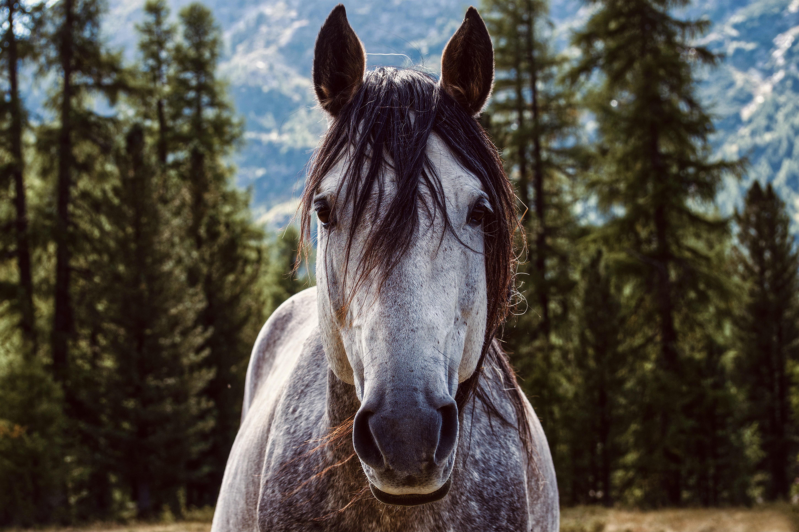
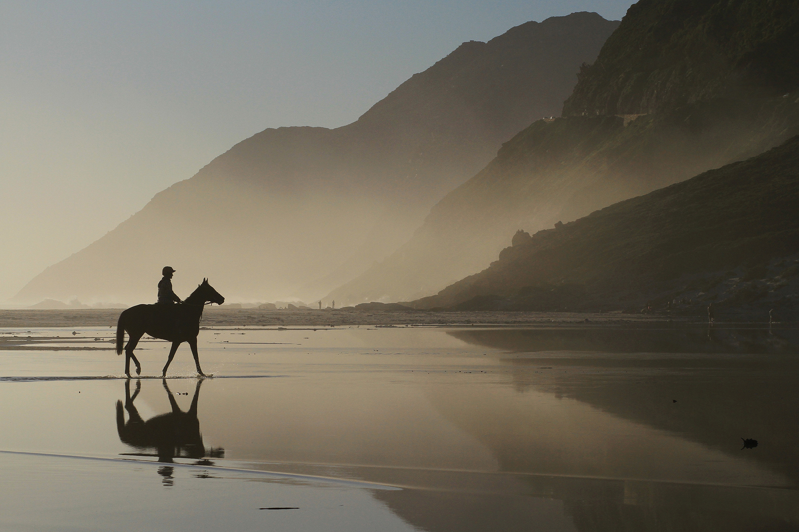

Så for det en blink över hela hans anlete som en sky av hänryckning, och han
började tala om
nordbygdens gamla tondiktare, vilkas vän och lärljunge han varit.
För min syn ställde han fram Gunnar Dahle, norrmannen; den väldige som en bister vinternatt på
Snasavattnets is kuvade en flock vargar med sitt spel, och stämde ner deras hungersyl till ett
stilla gnissel fullt av vemodsam avbön.

Så beskrev han mästarnas mästare, Nils från Jänsmässholmen – en liten nomad i skinnbyxor och
kofta,
men med det väderbitna ansiktet stämplad av all vildmarkens höga tjusning.
Snasavattnet är en referens till Snasahögarna
Snasahögarna är två fjäll vid Storulvån i Västjämtland
Storulvån är en populär utgångspunkt för fjällvandring
Ta med stormkök och torkmat om du inte är bra på fiske
Småleende berättade han sedan om Karl Söderbom i Botten, och Per Danielsson i Åre – de voro
båda hans jämnåriga och skickliga i strängaspel.
Såsom ett egendomligt drag hos den förstnämnde framhöll han vanan att skära hål
i vadmallströjans
linning, samt där stoppa in fiolen, och således på sina färder bära det kära instrumentet mitt över
sin barm.

Den största spelmansbragd som han erinrade sig om Per Danielsson, var att denne
på järnvägsbyggets
tid, vid ett dansgille i Storlien, lade ner fiolen mitt i en virvlande polska, och med ett kattlikt
skutt trängde sig mellan två rallare som i rus och vredesmod dragit kniv.
Med en säkerhet som verkade nästan hemsk fattade han på ett ögonblick de bägge kämparnas knivhand,
klämde till så att stålen skramlande föllo ned på golvet, och sade därpå med förödande gäcksamhet:
Tycker ni verkligen det är ordning, pojkar, att skära ihjäl varandra innan låten är slut?